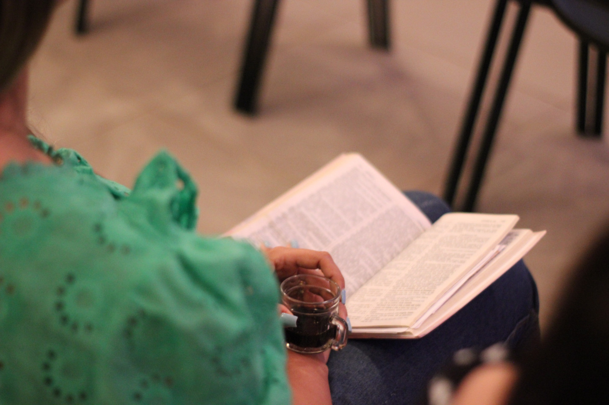

MENSAL
Para contribuir todos os meses usando seu cartão, clique no botão abaixo, informe o valor da sua contribuição e confirme os dados que serão solicitados.

A Comunidade Vitral nasceu para ser uma igreja em pessoas, viva, relacional e presente na cidade. Agora estamos dando um novo passo: a aquisição dos terrenos para a construção do nosso templo. Um espaço para acolher, ensinar, servir e continuar sendo ponte entre Deus e as pessoas.
IMPORTANTE SABER: Todos os dados que você irá informar são tratados por uma instituição financeira séria e segura chamada ASAAS. Portanto, seus dados estarão em segurança.
Para contribuir todos os meses usando seu cartão, clique no botão abaixo, informe o valor da sua contribuição e confirme os dados que serão solicitados.
Para contribuir 1 vez a cada 2 meses usando seu cartão, clique no botão abaixo, informe o valor da sua contribuição e confirme os dados que serão solicitados.
Para contribuir 1 vez de forma pontual e não recorrente, usando seu cartão, clique no botão abaixo, informe o valor da sua contribuição e confirme os dados que serão solicitados.
IMPORTANTE SABER: Todos os dados que você irá informar são tratados por uma instituição financeira séria e segura chamada ASAAS. Portanto, seus dados estarão em segurança.